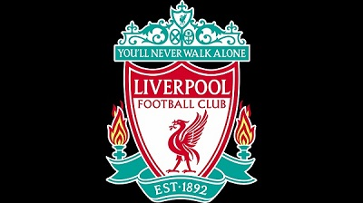

Fanserwis LFC

Aktualnie kontuzjowani zawodnicy
| Zawodnik | Data odniesienia kontuzji | Oszacowana data powrotu | Uraz |
| Danny Ings | 25.11.2016 | 30.06.2017 | kolano |
| Jordan Henderson | 12.02.2017 | 20.04.2017 | pięta |
| Adam Lallana | 02.04.2017 | 28.04.2017 | udo |